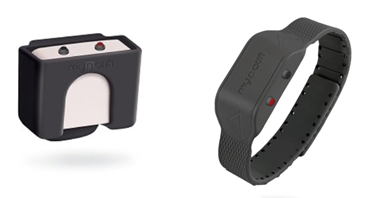

Aims
Aims: To develop a smart mirror system.
Our aim is to develop a smart mirror system that performs the basic functions of a bathroom such as turning lights on or turning the fan system on when hot water is used. The aim also includes developing additional features that would be seen as beneficial to our target market (60+ years of age) these features include a slip notification as well as the medication notification. The slip notification will use the inbuilt hardware such as a microphone and a motion sensor/camera to detect if someone has fallen when in-front of the mirror and after this will alert the individuals requested contact usually a family member or the emergency services. The medication notification will set a daily notification on the mirror screen to remind the user to take their set medications, furthermore the feature can be tailored to the users' needs, so if a pill needs to be taken 2 times a day the notification will pop up twice daily when movement is sensed in the bathroom.
Goal:
Develop Base Design and Mock-ups As the project is operating on a finite timeline in order to meet the requirements of the project brief, we will provide mock-ups of the design and functionality in order to show what it is that we are hoping to create with our project. We will use software such as photoshop to create the design of the magic mirror system and will aim to create step by step mock-ups of how each process will look when being used and demonstrate basic user functionality.Goal:
Develop Basic Functionality on Computer Mock-up Unfortunately, it just is not possible to provide a full working prototype on a touch screen smart mirror this is both due to lack of practice skills as well due to lack of proper access to the required hardware. As a result, we will develop the main functionality to operate on a standard computer system with click functionality rather than touch screen or voice control activation. This will be able to show progress and show how the system would work if we had the time to further develop the project while still allowing ourselves a reasonable and achievable goal. Goal: Access required components and price To develop the system, we will require a full understanding of everything that goes into operating a smart mirror and building an application as a result we will need to build a develop a list on components we deem adequate for developing this project. We will refer to other smart mirrors and look at components that they use and access if they would be a correct fit for the project that we are building. Furthermore, in order to best develop this process, we will aim to use components that are cheap enough to remain within a reasonable budget while still allowing for the features that are required.Plans and Progress
The Story Behind Assist In Reflection
The Magic Mirror was originally an idea that a normal household object, a mirror, be made into a smart object. A mirror that could help automate a house fully. Then tragedy struck. Early in 2019, one of the team members lost there great grandmother to a broken hip, due to a bad fall that occurred in her bathroom. She had an expensive mobile alarm that had the capability to detect falls and send an alert out to emergency services. The device failed and the team members great grandmother laid on the cold bathroom floor in pain for 3 hours before a family member found her.
It occurred to the team member that devices that are expensive and are supposed to work, don’t always do. This is why the magic mirror was created. Not only is it a smart object that can play music to wireless speakers or play YouTube videos but now has the ability to help people in (MyNotifi fall detection system, 2019)need. For far less than other products on the market that are only designed for fall detection.
The Mirror and it’s Modules
The Magic Mirror’s main job is to detect when someone has a fall in front of it and it can alert a family member, friend or emergency services. The way that the mirror detects if someone has fallen in front of it is by the utilisation of Li-Dar (light detection and ranging) sensors and cameras. The sensors “emits pulsed light waves into a surrounding environment” (What is Lidar? Learn How Lidar Works | Velodyne Lidar, 2020). The sensors use these light waves and how they bounce off objects in the environment to calculate the distance between the object and the sensor. A similar example of this type of sensor is echolocation. An example of this is shown in figure 1.1 (How does Lidar work?, 2020).

The mirror will also have other modules such as a medication tracker, a wet-room checklist, noise activated back light, etc. The medication tracker’s main role is to track and ensure that the person who is taking the medication is tak-ing the right amount at the right time consistently. It utilises a calendar and alerts with sound when activated. The user is able to remove and add medica-tions as prescribed by their general practitioner. The user can also configure it that they also get notifications on their phone. Figure 1.2 provides a good ex-ample of the alert (Phone notification, 2019).
The wet-room checklist is a checklist that is designed to remind users of im-portant items they need to have before showering. Whether that be a non-slip mat or a shower chair, this checklist will reduce the amount of forgotten items. In turn, this will result in less falls, which results in less deaths. The items on the list is completely customizable as not every user is the same. Once the list is completed, the module leaves the screen and the user is ready for a shower.
Another important module that the mirror will have is a noise activated light module. The mirror will have in-built microphones and speakers. This is for the voice-activated commands and also the light module. Essentially, the module will activate and the mirror will act as a backlight. This module will have some settings that the user can choose from. One option is that the backlight only activates between 8:00pm to 5:00am. This will be under power saving options. Another option is that it use’s the camera to detect how bright the backlight would be. This option would be the default setting.
All the modules in the mirror will mainly consist of CSS, Shell and JavaScript. CSS will make up the design of each module and will incorporate HTML as well. Shell and JavaScript will be the programming language of the modules and each one’s capabilities.
Roles
Heather Bowden: Editor of written reports, meeting leader, contributor of content to reports. Web prototype creator. Type The Logistician (ISTJ-A).
David Jelbart: Contributor of content to reports, UI/UX design, Web Reviewer. Type Assertive Protagonist (ENFJ-A).
Nicholas Dugan: Contributor of content to reports, script writer, Video component creation, Video Editing. Type Assertive Campaigner (ENFP-A)
Joshua Telfer: Contributor of content to reports, responsible for voice module implementation, web site constructor. Turbulent Virtuoso (INTP-T)
Kobi Gillespie-Hutchison: Content contributor to reports, program script writer, product designer, website designer, Chief Strategy Officer (CSO), Type Assertive Turbulent Logician (ISTJ-T)
Solomon Worcou: Program Designer, Content Contributor, Product Designer, Web Reviewer, Type Assertive Entertainer ESFP-A
Scopes and Limits
The scope of this project is to produce magic mirror modules that can help the elderly through simple functions such as the Bathroom Checklist and Medicine Tracker. Due to the limitations of both time and money we are aware that we will be unable to get a functional example of our product working, however, for both the Bathroom Checklist and the Medicine Tracker we can make a mockup of the displays in HTML/CSS as they are interfaces for the user to input data, requiring only the display and input, no extra hardware for function besides a screen and a method to input data (through a mouse or touch screen). These two modules should be achievable for a six person team, while the other modules are more complex. The fall warning module needs more than HTML/CSS to be functional as it requires extra hardware for the tracking of the person and detecting a fall, as well as needing further coding for functionality, so this module will not be included. Due to this we are likely to only have UI/UX mockups for this module. We will be unable to have voice detection, or the assistant in the prototype due to the limitations of the hardware and funds we can access as well as the lack of knowledge when working with the API for something like Amazon Alexa or Google Assistant.
Tools and Technologies
The software needed to build Assist in Reflection includes the Raspberry Pi OS which will be installed on a microSD card through the use of Raspberry Pi’s own New Out of Box Software Operating System Installer, or NOOBS for short. NOOBS will section off a partition of the SD card for the Raspberry Pi OS to use. To have the device work as a mirror, we will need to apply a reflective window film onto a layer of glass that goes beneath the touch frame. The group will require the MIT Software License from Magic Mirror2 to implement the different open source module they have. Kobi and Heather have both had previous experience with a Raspberry Pi, but no one has had experience with building anything as in depth as an interactive mirror. Joshua and David have had brief experience with Java programming, so this will likely translate into usable skills to program our modules.
The hardware required to build Assist in Reflection include:
• Raspberry Pi 4 Model B, the 4GB of RAM version
• A 15 watt USB-C power supply
• Micro-HDMI to HDMI cord
• A 32 inch GreenTouch Multipoint Touch Frame,
• An Acer EB321HQA 31.5" Full HD IPS Monitor
• SanDisk 32GB Ultra microSDHC
• SanDisk MobileMate USB 3.0 microSD Card Reader
• ReSpeaker 4-Mic Array for Raspberry Pi
• Benewake TFMini Plus 12m LIDAR TOF Range Sensor
• Raspberry Pi Camera Board v2 - 8 Megapixels
• Raspberry Pi Case, Red Version
• Integrated Development Environment Geany
• MCS Trendsetter Poster Back-Loading Wall Art & Puzzle Frame, 24 x 32 in, Black
• Window Film One Way Mirror Film Privacy Static Non-Adhesive Decorative Heat Control Anti UV Window Tint
• A computer with sufficient hardware requirements to program a Raspberry Pi
Testing
Testing by Kobi Gillespie-Hutchison
We will test Magic Mirror by using a combination of user testing and also the implication of dummies. With the dummies, we can test the range of the LiDar sensors and the camera. This can be done by moving a dummy and pushing it in a falling position and seeing if the mirror’s sensors and camera pick up that something has fallen within its view, as seen in Figure 1.1. This test will be run a minimum of 50 times, to reduce any irregularities and to also identify any trends. If the mirror comes up with the fall alert, then we will know it has worked.
After successful trials with the dummies, we will begin user testing. We will recreate the testing that was used with the dummies. However, the subjects will also be testing the voice commands as well. These voice commands will include “Help/Assistance” and “Stop Alert/Cancel Alert.” We will be testing for responsiveness and also the speed of the sensors and camera sensing that someone has fallen in front of it. For this test, we will use over 50 test subjects, all ranging in different ages, genders and race. This is to remove any biases and to keep a controlled variable. Just like the previous test, if the mirrors begins the alert module, then we will know we have succeeded.
We will test the security of the mirror as well. With multiple security practices that we have implemented, not a lot of testing for this particular part is not necessary. But we will run these tests by using malware technology to test the defences, such as different types of Trojan horses and Worms. We will know if we have succeeded if the project does not have any continuing issues and there is no malware detected on the mirrors programming files.
Another test that will be run is testing for ‘false falls.’ These are objects that fall in the mirrors field of view and sets off the alert. We will run the test with the same parameters as the dummy test and the falling user test. We will test to see which objects set off the mirror. By doing this, we can create a semi-artificial intelligence that can learn to detect people not objects.
Lastly, we will also run a test on each module and each one’s responsiveness. This can be done by multiple users that play around with the mirror or can be done by a program that opens every module and test each and create a diagnostics report. We strive to have each module run smoothly, with no lag in-between and when closing the module. If they do so, we will be happy with the mirror and it will be able to be commercially available.
Timeframe

At this point in the project, we would be aiming to have the basic functionality testable and be beginning to see how this would look or function on a touch screen or smart device. This does not mean we would be at a point where the coding and programming would be completed however, we would rather be at a point where we have a rough functionality that we can test. Furthermore, we would not be at the point where we would be operating on a smart mirror, rather any touch screen programming would be tested on items such as an iPad or through software equivalents.
Risks
Magic Mirror Module
The magic mirror modules do seem to be highly supported with the Raspberry-Pi. There are tutorials and help forums that are freely accessible. Whether we can achieve the amount of learning required n the set timeframe is doubtful. We need to learn Raspberry Pi OS (Linux), plus CSS/HTML at a minimum and become comfortable with how Magic Mirror interfaces with various hardware such as the IR touch framework.
Touch Frame
Another issue is that only one member of the team has an IR touch frame, although some of us do own a Raspberry-PI. A risk with any large glass screen is the chance of it shattering and damaging our equipment or harming ourselves. A specific risk to using a touch frame is the use of drivers that don’t work or are not designed for use on a Raspberry Pi with a touch screen.
Security
The last risk is the safety of the product – to interact with Alexa and receive software updates the Raspberry-Pi needs to be connected to the internet. This means we need to secure the device from the outside world and well as from inside the house. There needs to be some form of protection on the setup of the medicine lists, tampering could cause a medical issue. This may be easiest with voice recognition as having cameras that provide facial recognition could cause privacy issues as this device can be used in the bathroom. There will also need to be antivirus/anti-malware software installed, as the device will have the ability to track and monitor the individuals' movements, so this sensitive data will need to be protected.
Misuse of Fall Detection
Another issue is with false fall alerts – we do not want the device calling when nothing has happened. We may need the mirror to ask if anyone has entered the room and then start actively monitoring, or to implement a confirmation screen that confirms if the individual needs help.
Group Processes and Communications
The team uses for communications – the Microsoft Teams platform. Meetings are held on Wednesdays at 8pm and on Fridays at 7pm AEST. These were organised as recurring meetings. Other meetings are organised as needed on an ad hoc basis. If people cannot make the meetings then an apology is requested, and they are expected to watch the recording and if possible supply their input for the meeting via Teams Posts prior to the meeting. An Agenda is created before each of the two meetings and any actions are stored in Meeting Outcomes. All members of the group are encouraged to add ideas to the Agenda. We did have some issues midway for participation and this was escalated to the lecturer. Since then, communication and participation has greatly improved. Each Assignment is broken down into tasks and created as cards on the Trello board for that Assignment. Each member is expected to assign themselves to tasks and watch the board for tasks moving into the review state. Members are also expected to announce on the Post session that they are picking up a task, need help on a task or need people to review their task. All output of tasks are stored under files in the appropriate directory. Notepad is where we store ideas – such as useful links, artwork, pictures or input for other people’s tasks. We tried Microsoft Forms for voting on ideas without much success. GitHub is used to work on web content for both the group page and for prototypes. All members have access to the group repository.